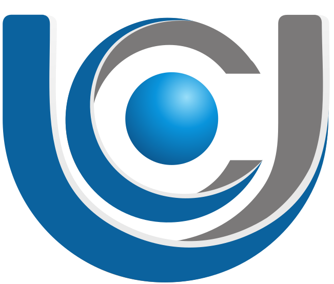

Atuo como tutor de polo da UniCesumar, oferecendo suporte aos alunos durante todo o percurso acadêmico, incluindo orientação sobre matrícula, esclarecimento de dúvidas e acompanhamento das etapas do curso, garantindo uma experiência organizada e eficiente.

Atuo com apresentações musicais profissionais para eventos sociais e culturais, oferecendo planejamento de repertório, produção e execução musical personalizada, garantindo qualidade técnica e experiência marcante.

Produção e edição de conteúdos audiovisuais para projetos musicais e institucionais, com identidade visual consistente, qualidade técnica e alinhamento às necessidades de cada projeto.

Consultoria em soluções digitais, incluindo criação e otimização de sites, estratégias digitais e presença online profissional, voltadas para instituições, profissionais e projetos que buscam resultados práticos.

Aberto a parcerias estratégicas em Música e Soluções Digitais, com foco em ampliar alcance, criar experiências de valor e apoiar projetos institucionais ou culturais.